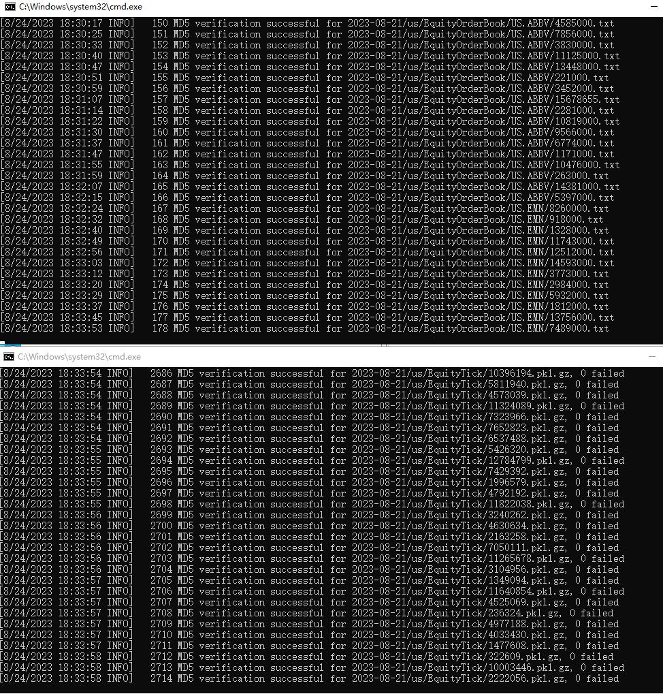

Niffler is a cloud-based machine-learning powered framework for back-testing and real-time trading leverage the tick-level data feed, we process and store over 100GB(30 million+) of data per day.
Niffler could provide signal notification, live curve, volatility surface calibration, and real time risk calculation
Researchers and traders could leverage its ample market data to rebuild the market structure and back-test their trading strategies with the highest accuracy. They could receive the notification via either website or IM app such as WeChat, WhatsApp
(Currently, the Niffler prod repo is private, it is the demo repo, and the application will be available soon)

Equity
Equity Option
Futures


Have questions? Reach out to the person to blame